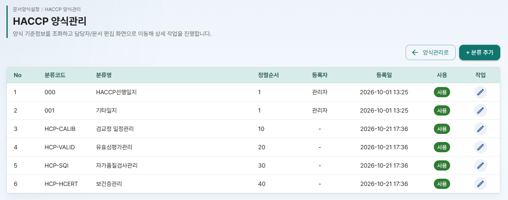
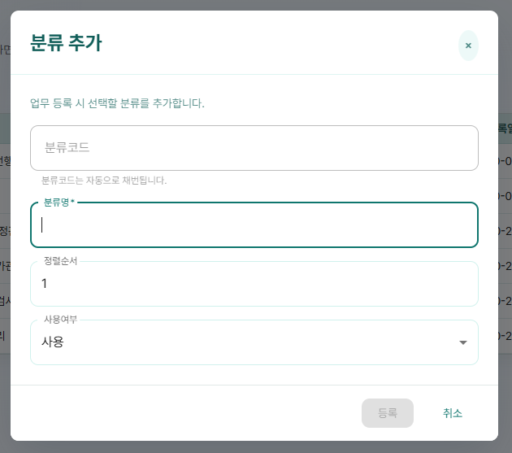
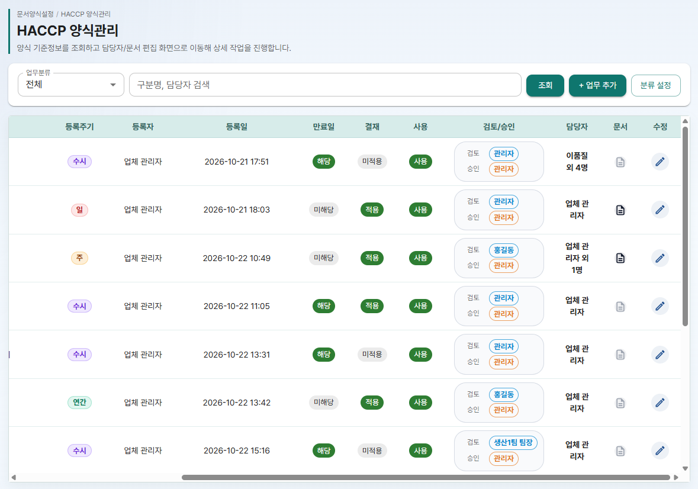
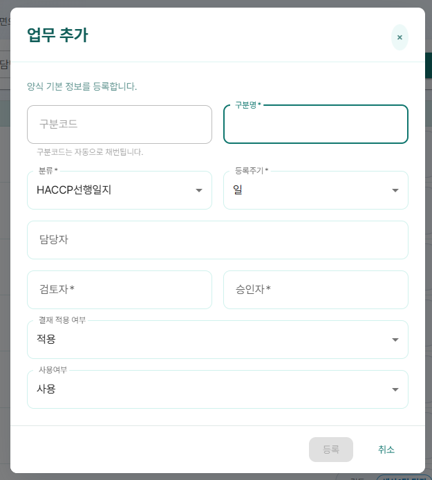
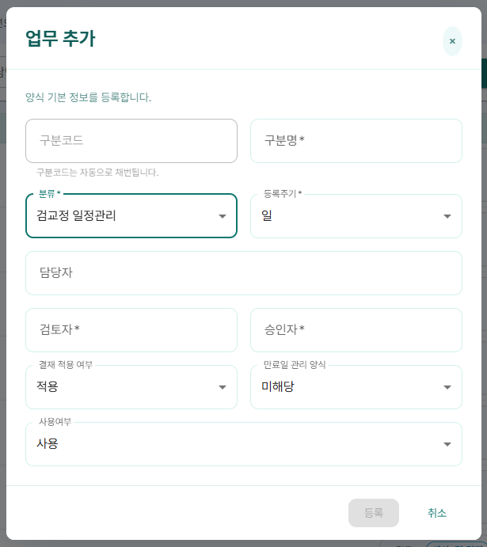

HACCP Cloud 사용 매뉴얼 ④편
HACCP 양식관리 관리자 전용
- 업무를 묶는 분류를 만들고 순서를 정하는 방법
- 업무(양식)를 등록하고 등록주기, 담당자, 검토자, 승인자를 정하는 방법
- 업무에 정한 값이 기안 작성과 결재에 어떻게 이어지는지
이 편은 업체관리자만 쓰는 기능입니다. 메뉴의 문서양식설정 > HACCP 양식관리에서 시작합니다.
1. 양식관리 한눈에 보기
HACCP 양식관리를 열면 화면 위에 "양식 기준정보를 조회하고 담당자/문서 편집 화면으로 이동해 상세 작업을 진행합니다." 라는 설명이 보입니다.
이 화면의 목록 한 줄이 "업무" 하나입니다. 업무마다 문서 틀인 양식을 하나씩 가지고, 사원은 이 양식으로 기안을 작성합니다.
준비 순서
업무에 정한 값은 아래처럼 다른 화면으로 이어집니다.
| 업무에 정하는 값 | 이어지는 곳 |
|---|---|
| 등록주기 | 종합현황 할 일, 업무 캘린더에 문서가 올라오는 주기 (⑦편). 기준은 등록주기 기준 |
| 검토자, 승인자 | 기안 작성 화면 결재선에 자동으로 들어감 (⑤편) |
| 결재 적용 여부 | "미적용" 이면 기안 작성 화면에 저장 버튼만 보임 (⑤편) |
| 양식 | 기안 작성 화면 본문의 틀 |
2. 분류 설정
분류는 업무를 묶는 단위입니다. HACCP 양식관리 화면의 분류 설정 버튼을 누르면 "업무 분류 관리" 화면이 열립니다. 이 화면은 메뉴에는 없습니다. 돌아갈 때는 양식관리로를 누릅니다.
화면 위에 "테넌트별 업무 분류를 등록하고 정렬 순서를 관리합니다." 라는 설명이 보이고, 목록에는 분류코드, 분류명, 정렬순서, 등록자, 등록일, 사용, 작업이 보입니다.

분류 추가
- + 분류 추가를 누릅니다. "분류 추가" 창이 열리고 "업무 등록 시 선택할 분류를 추가합니다." 안내가 보입니다.
- 분류명을 입력합니다. 꼭 입력해야 하는 칸입니다. 분류코드는 "분류코드는 자동으로 채번됩니다." 로 잠겨 있습니다.
- 정렬순서와 사용여부(사용, 미사용)를 정합니다. 정렬순서는 업무 추가 창의 분류 목록 순서입니다.
- 등록을 누릅니다. 분류명이 비어 있으면 등록이 눌리지 않습니다.
- "분류 등록 확인" 창에 "입력한 분류 정보를 등록하시겠습니까?" 가 보이면 등록을 누릅니다.

분류 수정
작업 칸 연필 아이콘(분류 수정) → "분류 수정" 창("분류코드는 변경할 수 없으며, 분류명/정렬순서/사용여부를 수정합니다.") 에서 고침 → 저장 → "분류 수정 확인" 창에서 저장.
3. 업무(양식) 등록과 수정
목록에는 No, 구분명, 분류, 등록주기, 등록자, 등록일, 만료일(해당/미해당), 결재(적용/미적용), 사용(사용/미사용), 검토/승인, 담당자, 문서, 수정이 보입니다. 담당자는 "홍길동 외 2명" 처럼 첫 사람과 나머지 인원수로 보입니다.

업무 찾기
업무분류(기본 "전체")를 고르고 검색 칸 "구분명, 담당자 검색" 에 입력한 뒤 조회를 누르거나 Enter 를 누릅니다. 검색 칸은 구분명과 검토자, 승인자 이름을 찾습니다. 담당자 칸의 이름은 찾지 않습니다.
업무 추가
- + 업무 추가를 누릅니다. "업무 추가" 창이 열리고 "양식 기본 정보를 등록합니다." 안내가 보입니다.
- 구분명을 입력합니다. 꼭 입력해야 하는 칸입니다. 구분코드는 "구분코드는 자동으로 채번됩니다." 로 잠겨 있습니다.
- 분류와 등록주기(일, 주, 월, 분기, 반기, 연간, 수시)를 고릅니다. 두 칸 모두 꼭 정해야 합니다.
- 담당자 칸에 이름을 입력해 찾고, 여러 명을 고릅니다.
- 결재 적용 여부를 정합니다. "적용" 이면 검토자와 승인자를 꼭 골라야 합니다. "미적용" 이면 두 칸이 비워지고 잠깁니다.
- HCP- 분류를 골랐다면 만료일 관리 양식(해당, 미해당)을 정합니다. 다른 분류로 바꾸면 "미해당" 으로 돌아갑니다.
- 사용여부(사용, 미사용)를 확인하고 등록을 누릅니다. 꼭 정해야 하는 칸이 비어 있으면 등록이 눌리지 않습니다.


담당자, 검토자, 승인자 목록에는 사용 중인 사용자만 나옵니다. 사용자 등록은 ②편 사용자 관리를 보세요.
등록주기 기준
등록주기는 업무를 등록한 날이 아니라 달력 기준으로 나뉩니다.
| 주기 | 한 주기의 범위 | 예시 |
|---|---|---|
| 일 | 하루 | 10월 26일 하루 |
| 주 | 월요일~일요일 | 10/26(월)~11/1(일) |
| 월 | 매달 1일~말일 | 10/1~10/31 |
| 분기 | 1~3월 / 4~6월 / 7~9월 / 10~12월 | 10월은 4분기(10~12월) |
| 반기 | 1~6월 / 7~12월 | 10월은 하반기(7~12월) |
| 연간 | 1월 1일~12월 31일 | 2026년 |
| 수시 | 정해진 범위 없음 | 필요할 때 작성 |
업무 수정
수정 칸 연필 아이콘(업무 수정) → "업무 수정" 창("양식 기본 정보를 수정합니다.") 에서 고침 → 저장.
4. 양식 편집
목록 문서 칸의 문서 모양 아이콘을 누르면 "문서생성/편집" 화면이 열리고, 여기서 업무의 양식을 만듭니다.
- 진한 색 아이콘: 양식이 만들어진 업무입니다. 마우스를 올리면 "생성된 문서 내역 보기" 가 보입니다.
- 흐린 회색 아이콘: 아직 양식이 없는 업무입니다. 마우스를 올리면 "문서 생성 페이지로 이동" 이 보입니다.
5. 안내 메시지 풀이
| 화면에 나오는 메시지 | 뜻과 해결 방법 |
|---|---|
| 업무가 등록되었습니다. / 업무가 수정되었습니다. | 업무 저장이 끝났습니다. 목록이 다시 조회됩니다. |
| 업무 등록에 실패했습니다. / 업무 수정에 실패했습니다. | 업무를 저장하지 못했습니다. 입력 내용을 확인하고 다시 시도하세요. |
| 분류 목록을 불러오지 못했습니다. / 업무 목록을 불러오지 못했습니다. / 사용자 목록을 불러오지 못했습니다. | 일시적인 연결 문제입니다. 화면을 새로 고치세요. |
| 조회된 양식이 없습니다. | 검색 조건에 맞는 업무가 없습니다. 검색 칸을 비우거나 업무분류를 "전체" 로 바꿔 보세요. |
| 공통코드 WF_FORM_CYCLE(등록주기)을 먼저 등록하세요. | 등록주기 목록이 비어 있습니다. ③편 공통코드에서 등록주기 그룹의 값을 확인하세요. |
| 분류가 등록되었습니다. / 분류가 수정되었습니다. | 분류 저장이 끝났습니다. |
| 분류 등록에 실패했습니다. / 분류 수정에 실패했습니다. | 분류를 저장하지 못했습니다. 입력 내용을 확인하고 다시 시도하세요. |
| 업무 분류 목록을 불러오지 못했습니다. | 일시적인 연결 문제입니다. 화면을 새로 고치세요. |
| 조회된 분류가 없습니다. | 아직 등록한 분류가 없습니다. + 분류 추가로 만드세요. |
실패 메시지 자리에는 서버가 알려 준 이유가 대신 보일 수 있습니다.
업무 추가 창 분류 목록에 만든 분류가 없어요
분류의 사용여부가 "미사용" 인지 확인하세요. 2. 분류 설정에서 "사용" 으로 바꾸면 목록에 나옵니다.
검토자, 승인자 칸이 눌리지 않아요
결재 적용 여부가 "미적용" 입니다. 결재가 필요한 업무라면 "적용" 으로 바꾸세요.
만료일 관리 양식 칸이 안 보여요
분류코드가 HCP- 로 시작하는 분류를 골랐을 때만 보입니다.
담당자 이름으로 검색했는데 안 나와요
검색 칸은 구분명과 검토자, 승인자 이름만 찾습니다. 업무분류로 좁혀서 찾으세요.